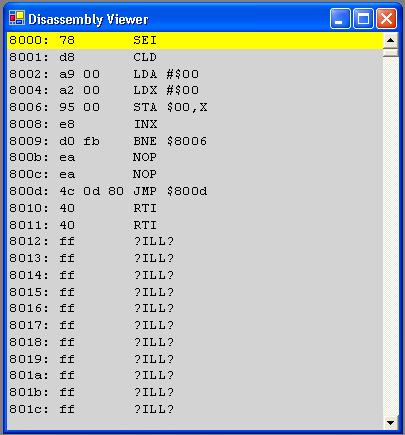

This view show a disassembly of a portion of memory. You can scroll through memory using the scroll bar. The yellow highlighted line is the current location of the program counter (the line that is going to be executed next).